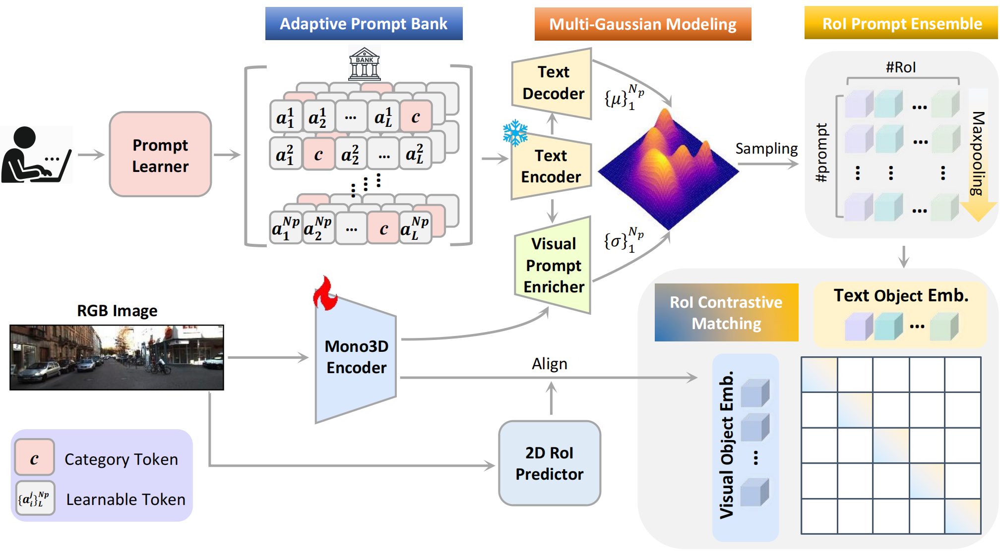

Abstract
Monocular 3D object detection leverages deterministic linguistic cues as effective auxiliary weak supervision, providing complementary semantic context. However, hand-crafted textual descriptions struggle to capture the inherent visual diversity of individuals across scenes, limiting the model's ability to learn scene-aware representations. To address this challenge, we propose Visual-referred Probabilistic Prompt Learning (VirPro), an adaptive multi-modal pretraining paradigm that can be seamlessly integrated into diverse weakly-supervised monocular 3D detection (WS-M3D) frameworks. Specifically, we generate a diverse set of instance-conditioned learnable prompts stored in an Adaptive Prompt Bank (APB). Subsequently, we introduce Multi-Gaussian Prompt Modeling (MGPM), which incorporates scene-based visual features into corresponding text embeddings, allowing the text prompts to express visual uncertainty. By fusing the visual-linguistic embeddings, we further decode the Gaussian distribution of the prompted object and derive a unified object-level prompt embedding for each instance. We employ RoI-level contrastive matching to enforce modality alignment, making the embeddings of co-occurring objects within the same scene closer in the latent space, thereby enhancing semantic coherence. Extensive experiments on the KITTI benchmark show that integrating our pretraining paradigm consistently leads to significant performance improvements, achieving up to a 4.8% average precision gain over the baseline model.
Method Overview
Our paradigm adopts a two-stage training pipeline. In the first stage, as shown in the following figure, we introduce an Adaptive Prompt Bank (APB) to generate diverse, instance-specific prompts. We further propose Multi-Gaussian Prompt Modeling (MGPM), which injects visual cues into textual embeddings and represents each prompt as a multivariate Gaussian distribution. A unified prompt embedding is then sampled and normalized for each instance, followed by RoI-level Contrastive Matching to align monocular 3D object embeddings with their corresponding textual prompts embeddings. In the second stage, we adopt the Dual-to-One Distillation (D2OD) strategy from CAW3D to transfer the learned scene-aware priors into the monocular encoder.

Results
Quantitative Results
We conducted extensive experiments on the KITTI benchmark to validate the effectiveness of our proposed pretraining paradigm. As shown in the following tables, our method, as an auxiliary weak supervision signal, significantly boosts the performance of existing WS-M3D frameworks. The best and second-best results are highlighted in red and blue, respectively.


Qualitative Results